Heather  MacGregor
MacGregor
Supplementary Material for Statement of Research
Quantum Mechanical Prediction of Vibrational Circular Dichroism Spectra.
| 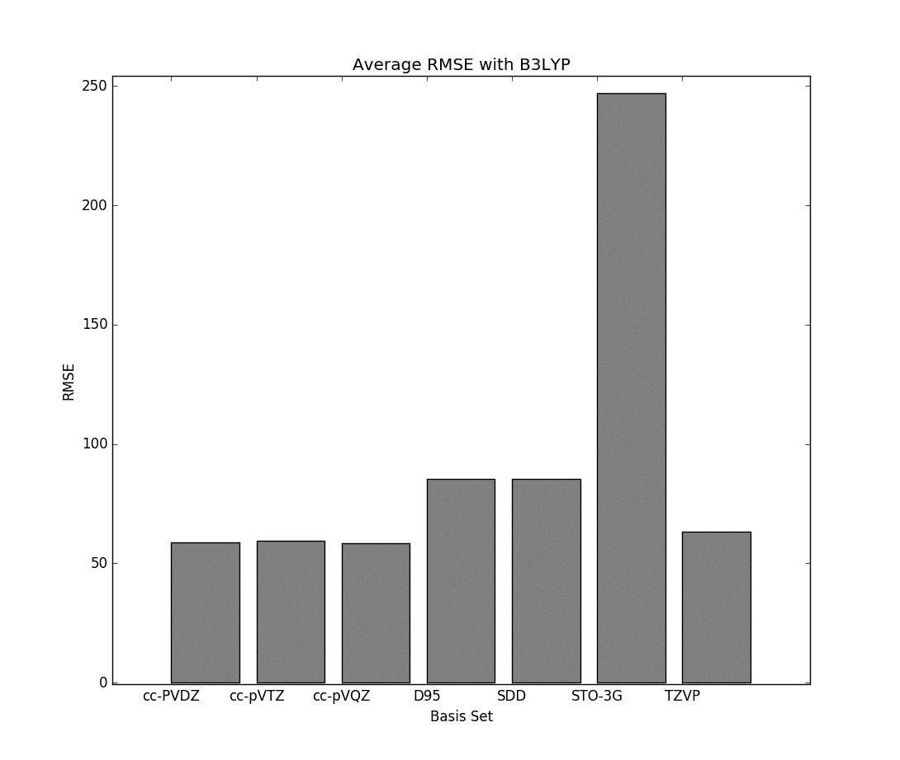 |
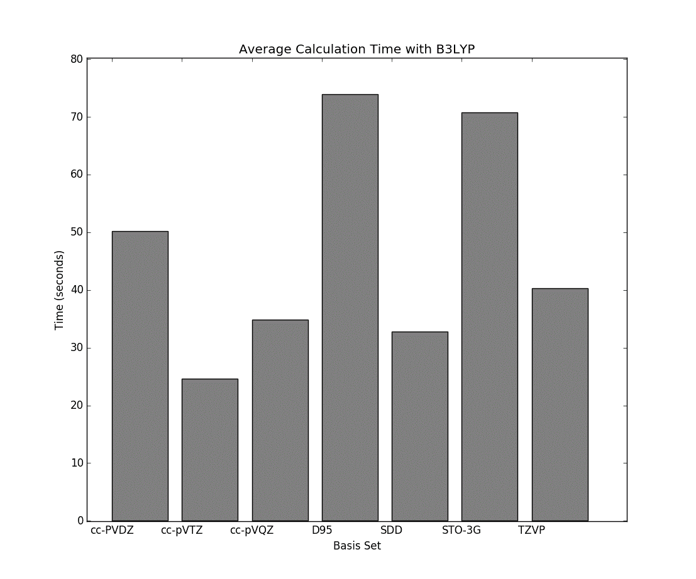 |
| Fig. 1 - Average RMSE of Gaussian 16 optimization and VCD jobs ran with the B3LYP method. |
Fig. 2 - Average runtime of Gaussian 16 optimization and VCD jobs ran with the B3LYP method. |
| 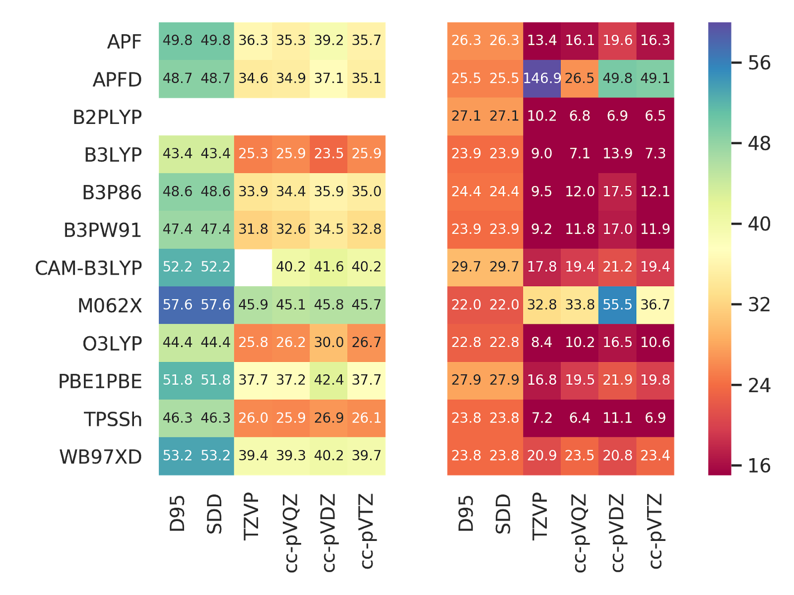 |
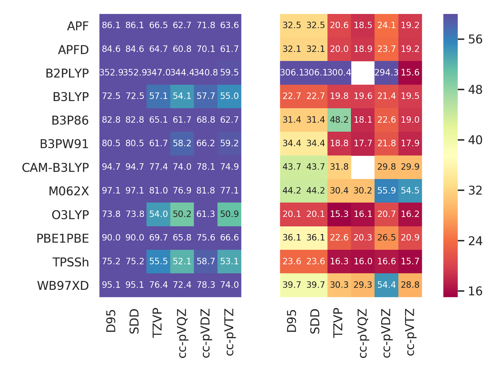 |
| Fig. 3A - Root mean square error (RMSE) of density functional calculations of spectra for Trans-2,3-dimethylaziridine. |
Fig. 3B - Root mean square error (RMSE) of density functional calculations of spectra for 2,2,3,3-Tetradeuteriooxirane. |
| 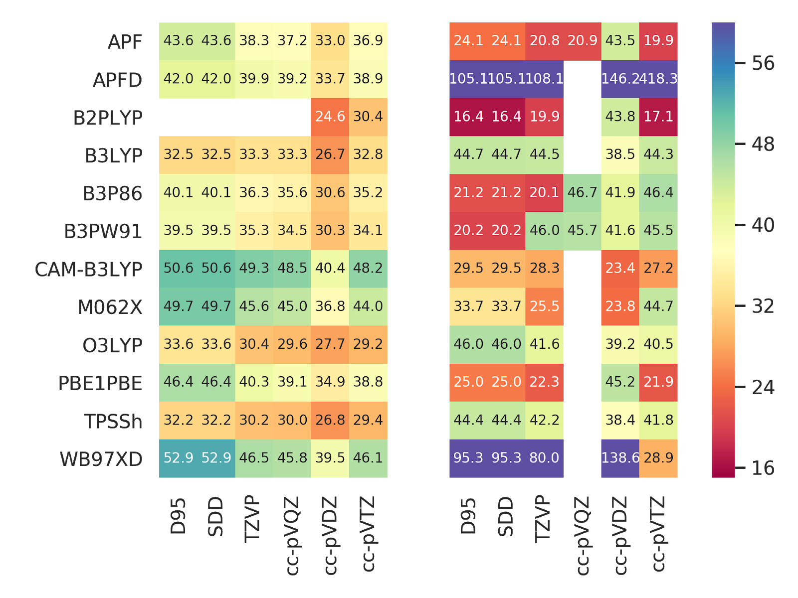 |
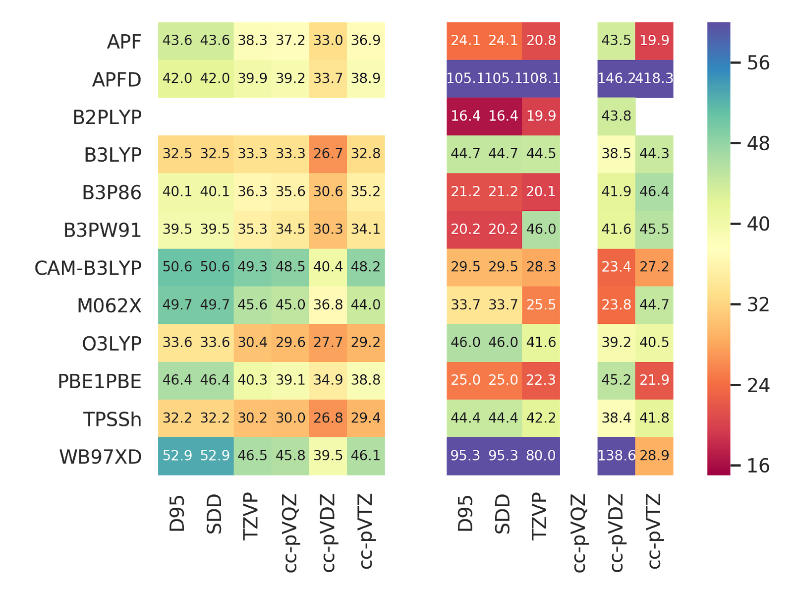 |
| Fig. 3C - Root mean square error (RMSE) of density functional calculations of spectra for 1,2-Dimethylaziridine. |
Fig. 3D - Root mean square error (RMSE) of density functional calculations of spectra for 1,3-Dideuterioallene. |
| 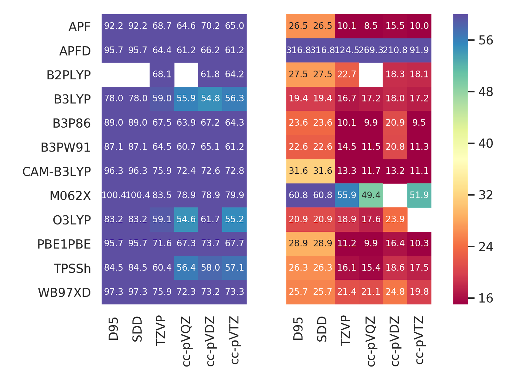 |
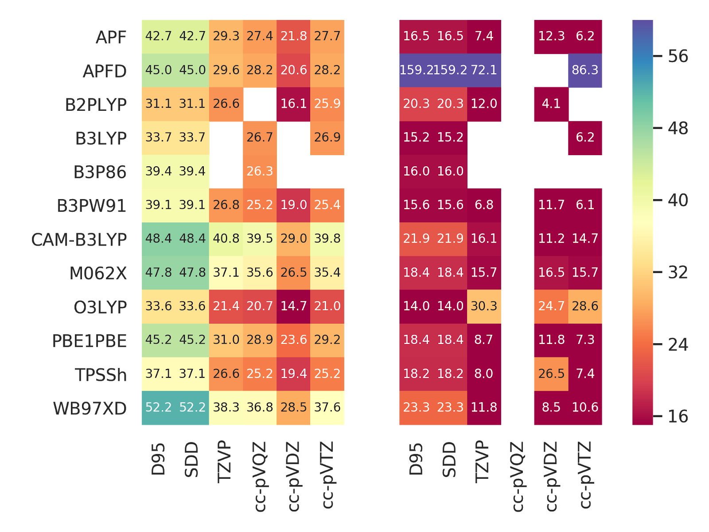 |
| Fig. 3E - Root mean square error (RMSE) of density functional calculations of spectra for 1-Deuterioethanol. |
Fig. 3F - Root mean square error (RMSE) of density functional calculations of spectra for Trans-2,3-dimethyloxirane. |
Feeding State Dependency of Inhibitory Synaptic Dynamics in the Ventromedial Hypothalamus
| 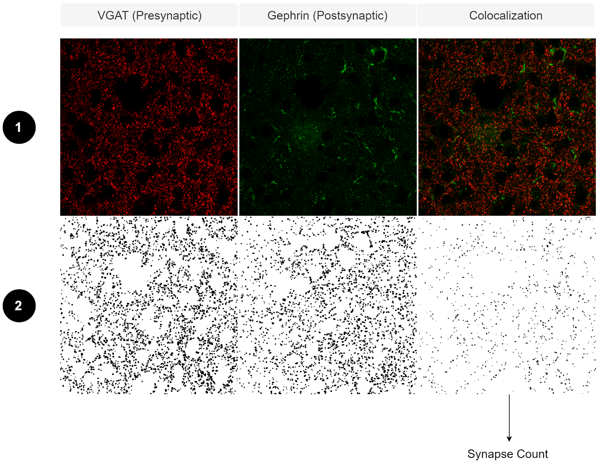 |
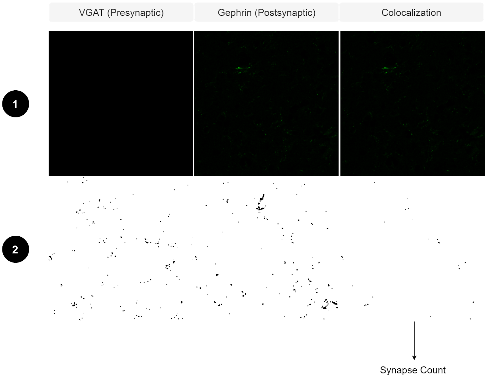 |
| Fig. 3 - Processing of 63X confocal images using the Synapse Counter Plugin for ImageJ. |
Fig. 4 - Processing of 63X confocal images of the no primary control using the Synapse Counter Plugin for ImageJ. |
| 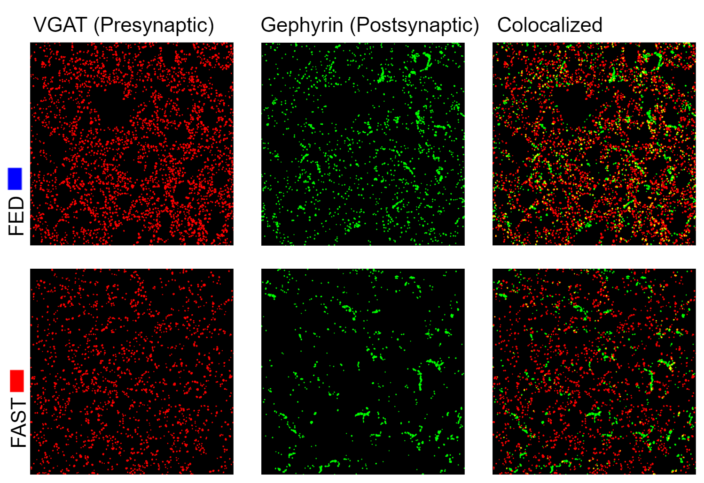 |
Fig. 5 - Representative images. Arrows indicate colocalization of VGAT and Gephrin.
Scale bar = 142.4631 μm. |
| 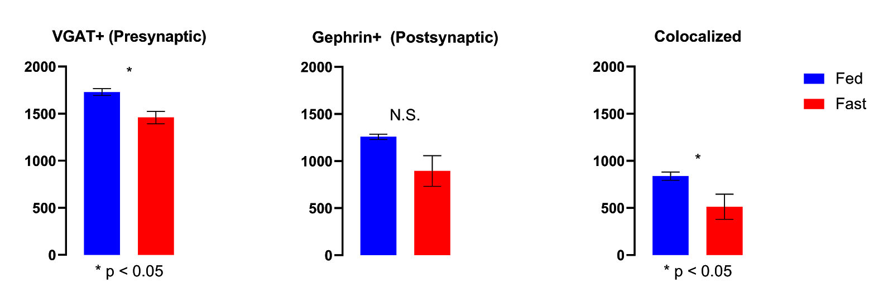 |
Fig. 6 - Total count of inhibitory synapses in the ventromedial hypothalamus in fed and fasted (24 hr) WT mice. |